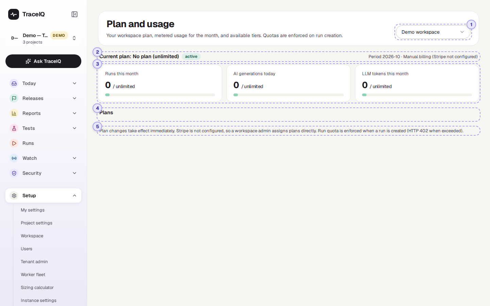
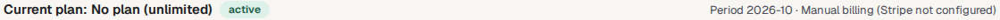
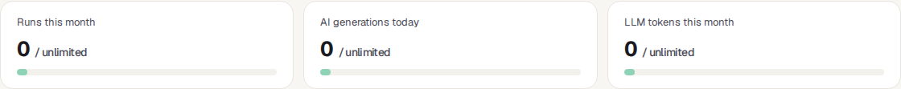

Billing
Each workspace has a plan, which can set limits such as how many test runs it may start in a month. This page shows the current plan, how much of this month's allowance has been used, and the other plans you could switch to.
What it is for
Billing answers "How much have we used this month, and are we about to hit a limit?" When a run is refused because the month's allowance is spent, this is the page that shows it, and where an admin moves the workspace to a bigger plan.
Workspace admins
Keep an eye on the meters and change the plan before the team runs out.
Team members
Find out why a run was refused with "Monthly run quota reached".
Budget holders
See which plan the workspace is on, and what each plan includes.
Where to find it: in the sidebar, open Setup → Billing. The page's own heading says Plan and usage.
A tour of the screen
The server used for this guide has no plans set up, so the demo workspace shows "No plan (unlimited)", three meters with no limit, and an empty list of plans. The numbers on the screenshot match the sections below.

Workspace
Plans belong to a workspace. This menu chooses which one. The page opens on the first workspace in your list each time.
Current plan

- Current plan: the plan's name. No plan (unlimited) means the server has no plans at all, so nothing is limited.
- The green label is the subscription's state, normally active. With card payments it can also show what the payment service reports, such as canceled.
- Period: the month the meters count, as year and month (for example 2026-10). Months follow UTC, so in India a new month starts at 5:30 a.m. on the 1st.
- Manual billing (Stripe not configured) appears when the server takes no card payments. Then an admin simply switches the plan here.
The three meters

Each meter shows what has been used, against the plan's limit (unlimited when there is none). With a limit, the bar fills up and changes colour:
| Bar colour | Meaning |
|---|---|
| Green | Less than 70% of the limit used. |
| Yellow | 70% to 89% used. Plan ahead. |
| Orange | 90% or more used. The limit is close. |
| Meter | What it counts |
|---|---|
| Runs this month | Runs started this calendar month by people, the API, CI pipelines, benchmarks, access-matrix checks and suggested-fix checks. A request that runs a suite in three browsers counts as three runs. Runs started by schedules and monitors are not counted. |
| AI generations today | Shown against the plan's daily AI limit. See the note below: on this version it always reads 0. |
| LLM tokens this month | AI text (tokens) used by the workspace this calendar month. The same number as on AI usage. |
Two limits are enforced. When runs per month is used up, new runs are refused with "Monthly run quota reached" until the next month. When LLM tokens per month is used up, AI features are skipped and fall back to their non-AI behaviour. The other limits listed on a plan (seats, concurrent runs, retention and AI generations per day) are shown for information only on this version: nothing checks them, and the AI-generations meter is never counted up. (The number of runs at the same time is limited per workspace, in its own settings, and AI test writing has its own daily limit per workspace.)
Plans
One card per plan the server offers. On the demo server there are none, so this part is empty. Each card shows:
- The plan's name, and Current on the one the workspace is on.
- Its price per month, Free, or Custom for the enterprise plan.
- Its limits: runs per month, seats, concurrent runs, retention in days, AI generations per day and LLM tokens per month. Unlimited means no limit.
- A button: Current plan (greyed out) on your plan; Upgrade on paid plans when the server takes card payments, which opens the payment page; otherwise Switch to …, which changes the plan straight away.
The note at the bottom
A reminder that plan changes take effect immediately, how plans are changed on this server (card payment, or an admin assigning them), and that the run limit is checked when a run is created.
Watch it in use
How to…
…check whether you are close to the run limit
- Choose the workspace in the menu at the top right.
- Read Runs this month. A yellow or orange bar means it is getting close.
- Remember that runs in several browsers count once per browser.
…move the workspace to another plan
- You need to be a workspace admin.
- Under Plans, press Upgrade (card payment) or Switch to … on the plan you want.
- With Switch to, the new limits apply at once and the message "Plan updated" appears. With Upgrade, the plan changes once the payment has gone through.
…find out why a run was refused
- If the message says "Monthly run quota reached (50/50)", the month's runs are used up: the meter here shows the same numbers.
- Ask a workspace admin to move to a bigger plan, or wait until the 1st of next month (UTC).
Good to know
- Counters start again every month, on the 1st at midnight UTC. Unused allowance doesn't carry over.
- The run limit is checked before a run is created. While a single run is left, one request that starts several runs (for example in three browsers) still goes through, so the meter can end slightly above the limit.
- Everyone in the workspace can see this page. Switching plans needs the workspace admin role; others get "Workspace admin required to change plan".
- Without a plan, nothing is limited. A workspace that was never given a plan is on the free plan if the server has one, and unlimited if it has none.
- Money for AI and test machines is on Costs under Reports, not here.
Related pages
AI usage
Where the month's AI tokens went, by feature and provider.
Policies
The rules that refuse runs and AI calls when a plan limit is reached.
Workspace
The workspace's own settings, including how many runs may run at once.
Costs
What testing and AI cost in money, per project.